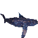
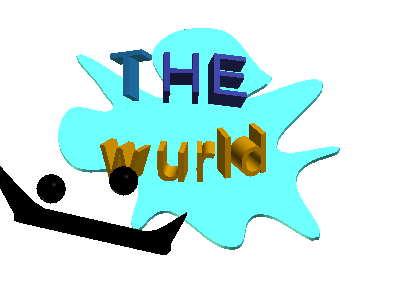
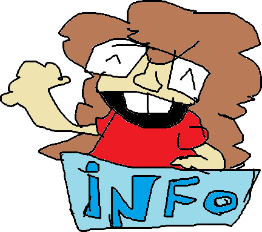
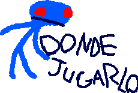
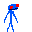

The Wurld es un juego web gratuito inspirado en la estética de internet y los videojuegos de principios de los 2000. Explora distintos estilos gráficos y escenarios creativos en una experiencia principalmente tranquila y relajante, aunque con algunos elementos de terror. Si encuentras errores, tienes alguna duda o necesitas ayuda, puedes contactarnos a través de nuestro correo oficial:queleimporta489@gmail.com

Haz clic en el botón de abajo para ir directamente a la página del juego en Itch.io y poder empezar a jugar.
